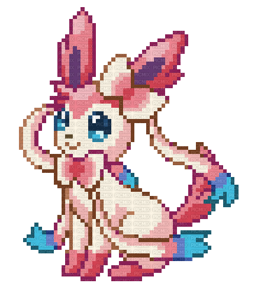

-
Eevee #113

- Normal
Eevee tem uma composição genética instável que, de repente se transforma devido ao ambiente em que vive. Radiação de várias pedras faz com que esse Pokémon evolua.
-
Vaporeon #114

- Água
Sua composição celular é semelhante às moléculas de água. Quando suas barbatanas começam a vibrar, é sinal que uma chuva está para cair. Ele pode fundir o seu corpo na água, ficando completamente invisível.
-
Jolteon #115

- Elétrico
O pelo eriçado é feito de agulhas carregadas com eletricidade. Um Pókemon sensível que facilmente fica triste ou com raiva. Toda vez que seu humor muda, ele cobra energia.
-
Flareon #135

- Fogo
As chamas que ele dispara são tão quentes que podem chegar a mais de 1600ºC. Sua temperatura corporal ultrapassa os 800ºC. Ele afofa sua pelugem com a temperatura do corpo.
-
Espeon #196

- Psíquico
Seu pelo tem a aparência e a sensação de veludo. O orbe em sua testa brilha quando usa seus poderes psíquicos.
-
Umbreon #197

- Noturno
Quando expostos à luz da lua, os anéis de seu corpo brilham e ganham um poder misterioso. Ele se esconde nas sombras e aguarda seus adversários para atacar.
-
Leafeon #470

- Grama
Assim como as plantas, Leafeon faz fotossíntese. Por esta razão, está sempre cercado por um ar puro. Procura sempre dormir exposto à luz do sol.
-
Glaceon #471

- Gelo
Ele consegue formar pequenos cristais de gelo ao seu redor, o que baixa a temperatura da atmosfera que o rodeia. Como forma de proteção, ele congela a sua pele para deixar os seus pelos espetados.
-
Sylveon #700
- Fada
Ele envia uma aura suave de suas antenas em forma de fitas para acalmar as lutas. Gosta de enrolar suas fitas em seu treinador e sair andando com ele.